Vanishing gradient problem:
Sequential, time series data (stocks, sentence predictions,speech prediction,video frames, any sort of sequence labelling) requires a sequential model such as a RNN (shown below).
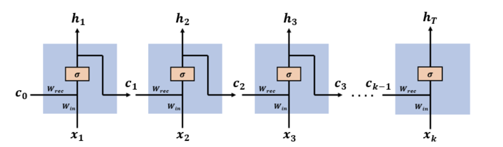
Unrolled RNN structure
The activation function (orange box) is the sigmoid function this helps...
x(t) describes an input vector at time step t
c(t) describes past information/learned knowledge at time t (encoded as c(x(t))),also known as cell state
Wrec and Win are to be updated during the backpropagation step. They can be thought of as a single weight W
h(t) describes
Backpropagation in RNN’s: Backpropagation is how the RNN learns, through a process similar to gradient descent the weights are adjusted and error function (E) is minimized each iteration, allowing for the RNN to be more accurate.
The partial derivative of the error term (E) with regard to the weight W, can be represented as the summation of partial derivatives of the error at each time step with regard to the partial derivative of the weight at each time step.
The error gradient:
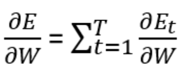
This is the function to be minimized to increase the accuracy or the model.
Minimizing error
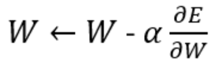
The weights are updated by subtracting the learning rate multiplied by the partial derivative of the error with respect to the weight. The learning rate determines how large or small the step taken to reach the minimum of the error function is.
Mathematical explanation for the vanishing gradient problem in RNN’s<
Each error gradient can be expressed as the ...
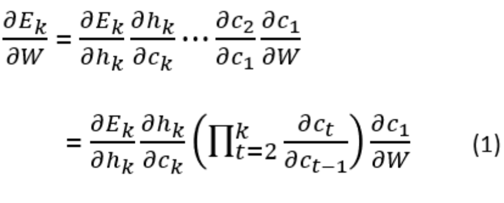
Ct can be expressed as an output from the previous cell
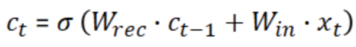
Compute the gradient of c(t)
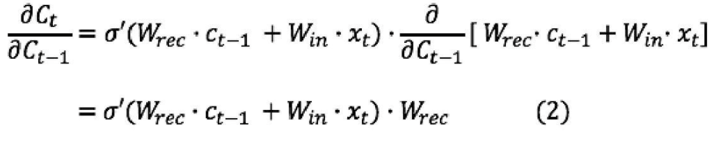
Plugging (2) into (1) the backpropagation gradient becomes
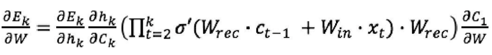
When k is large, the gradient starts to vanish (approach 0). This is because the derivative of the activation function (tanh) is smaller than one, and at each iteration (large k) it keeps getting smaller.
The problem with vanishing gradient:
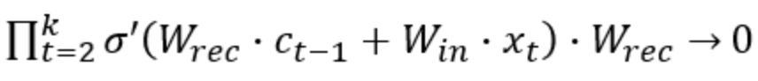
The activation function portion is multiplied with the other expressions, making the gradient approach 0
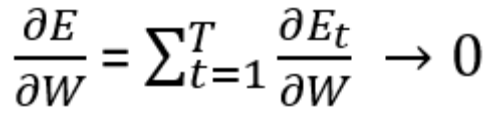
At some time k
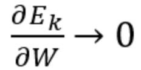
This results in the weights not updating, error is not minimized (no learning happens)
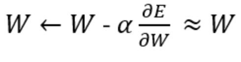
How LSTM fix the vanishing gradient problem
Forget gate output:
Determine what information should be forgotten depending on the new input
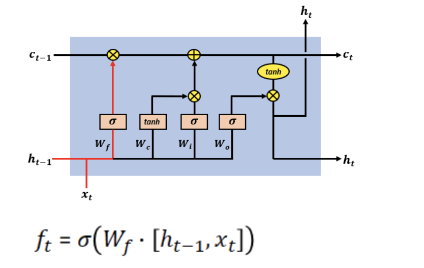
Input gate output:
Controls what information will be encoded in the cell state
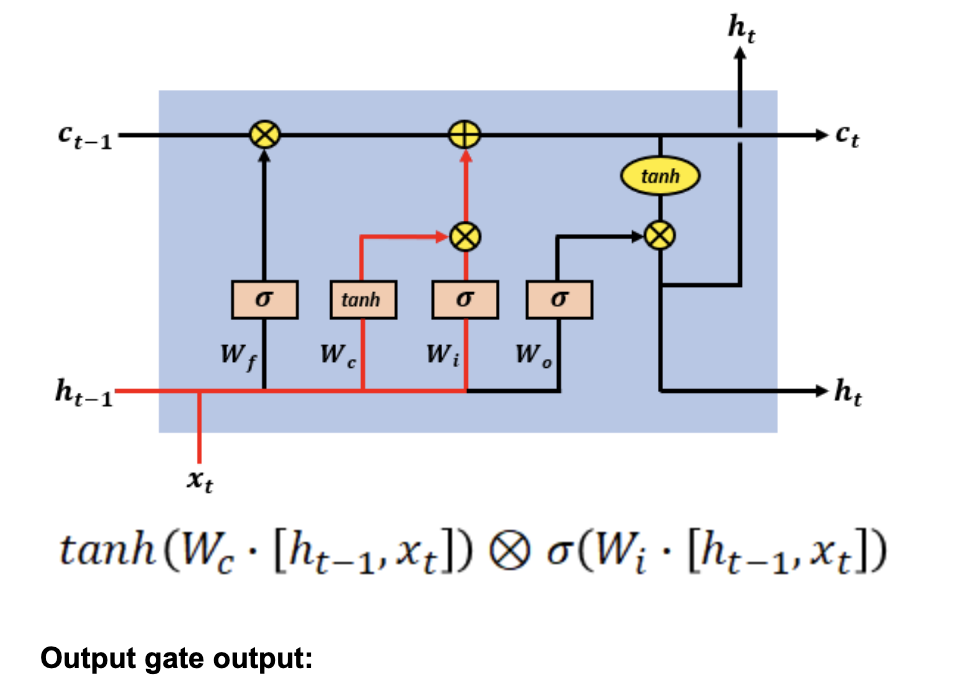
Output gate output:
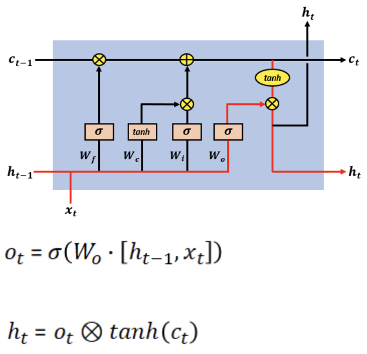
Cell state output:
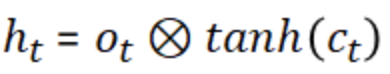
Recall RNN shortcoming
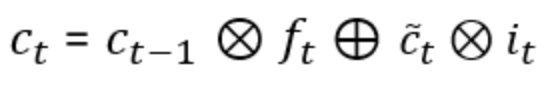
However in an lstm, we can express the ct term by
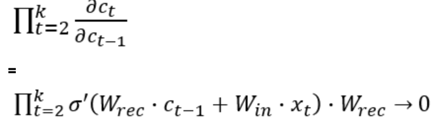
Therefore in an lstm,
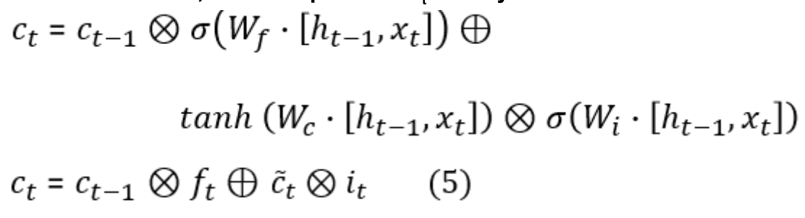
Which can be further simplified to
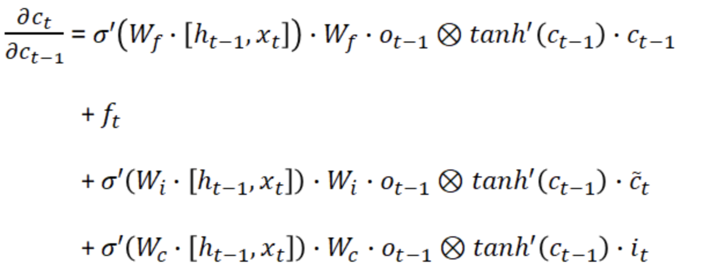
Plugging this component back into the error gradient,
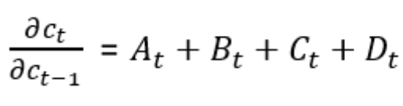
Now,
As the forget gate allows for important information to be remembered, and there are no tanh outputs being multiplied like with RNN’s.
Sources:
https://medium.com/datadriveninvestor/how-do-lstm-networks-solve-the-problem-of-vanishing-gradients-a6784971a577
https://weberna.github.io/blog/2017/11/15/LSTM-Vanishing-Gradients.html